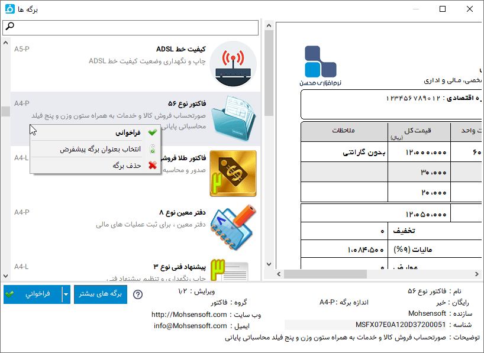

پنجره انتخاب برگ¶
در این پنجره میتوانید برگ مورد نظرتان را از لیست برگ های نصب شده انتخاب نمایید ، یک برگ را بعنوان برگ پیش فرض انتخاب کنید و مشخصات کامل یک برگ را مشاهده نمایید.
توسط کادر بالای لیست امکان جستجو در بین برگه های نصب شده وجود دارد، این جستجو در بین مشخصات نام، توضیح، اندازه و شناسه آن انجام میشود.
با انتخاب هر برگ در لیست مشخصات آن در پایین پنجره نمایش داده می شود ، همچنین پیش نمایشی از خروجی برگ در سمت راست لیست نمایش داده می شود .
فراخوانی : برای انتخاب نهایی برگ کافیست روی برگ مورد نظر خود دبل کلیک نمایید و یا پس از انتخاب برگ ، "فراخوانی" را انتخاب نمایید .و L : در لیست برگ ها علاوه بر نام برگ و توضیحی که زیر نام وجود دارد اندازه و چرخش برگه نوشته شده است . علامت P به منزله Portrait یا عمودی و L نشان از Landscape یا افقی بودن برگ است.
شناسه : شناسه برگ . این مورد در قسمت تعاریف توضیح داده شده است.
پیش فرض کردن برگه : شما میتوانید یک برگه را بعنوان برگه پیش فرض انتخاب نمایید تا در موقع اجرای برنامه این برگه بصورت خودکار انتخاب شود . برای این کار کافیست پس از انتخاب برگه مورد نظر ، روی آن راست کلیک کرده و گزینه " انتخاب بعنوان برگ پیش فرض" را انتخاب نمایید.